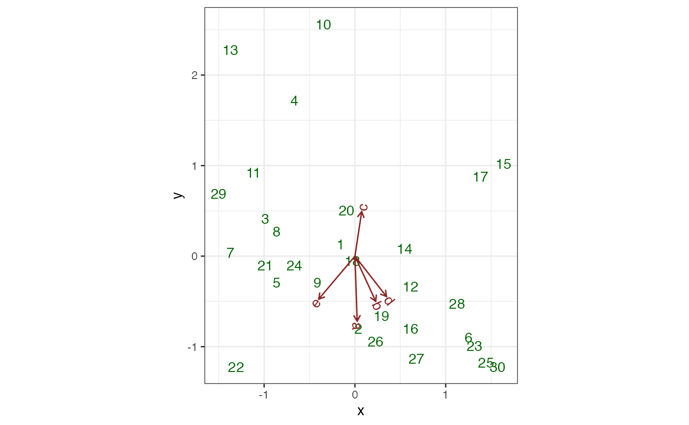

Render text at ordinates radiating out from the origin
geom-biplot-text-radiate.Rdgeom_*_text_radiate() is adapted from ggbiplot::ggbiplot().
It renders labels at specified positions and angles that radiate out from
the origin.
geom_u_text_radiate(mapping = NULL, data = NULL, stat = "identity", position = "identity", ..., parse = FALSE, check_overlap = FALSE, na.rm = FALSE, show.legend = NA, inherit.aes = TRUE) geom_v_text_radiate(mapping = NULL, data = NULL, stat = "identity", position = "identity", ..., parse = FALSE, check_overlap = FALSE, na.rm = FALSE, show.legend = NA, inherit.aes = TRUE) geom_biplot_text_radiate(mapping = NULL, data = NULL, stat = "identity", position = "identity", .matrix = "v", ..., parse = FALSE, check_overlap = FALSE, na.rm = FALSE, show.legend = NA, inherit.aes = TRUE)
Arguments
| mapping | Set of aesthetic mappings created by |
|---|---|
| data | The data to be displayed in this layer. There are three options: If A A |
| stat | The statistical transformation to use on the data for this layer, as a string. |
| position | Position adjustment, either as a string, or the result of a call to a position adjustment function. |
| ... | Additional arguments passed to |
| parse | See |
| check_overlap | See |
| na.rm | Passed to |
| show.legend | logical. Should this layer be included in the legends?
|
| inherit.aes | If |
| .matrix | A character string matching one of several indicators for one
or both matrices in a matrix decomposition used for ordination. The
standard values are |
Format
An object of class GeomTextRadiate (inherits from GeomText, Geom, ggproto, gg) of length 2.
Biplot layers
ggbiplot() uses ggplot2::fortify() internally to produce a single data
frame with a .matrix column distinguishing the subjects ("u") and
variables ("v"). The stat layers stat_u() and stat_v() simply filter
the data frame to one of these two.
The geom layers geom_u_*() and geom_v_*() call the corresponding stat in
order to render plot elements for the corresponding matrix \(U\) or
\(V\). geom_biplot_*() selects a default matrix based on common practice,
e.g. \(U\) for points and \(V\) for arrows.
Aesthetics
geom_*_text_radiate() understands the following aesthetics (required
aesthetics are in bold):
xylabelalphaanglecolourfamilyfontfacehjustlineheightsizevjustgroup
Examples
# Generalized multiple linear regression on marine ecosystem data # Reproduce Exhibit 2.5 in Greenacre (2010) bioenv_std <- dplyr::mutate_if(bioenv, is.numeric, ~ as.vector(scale(.))) resp_std <- as.matrix(dplyr::select(bioenv_std, a:e)) pred_std <- as.matrix(dplyr::select(bioenv_std, x = Depth, y = Pollution)) lm(resp_std ~ pred_std + 0) %>% as_tbl_ord() %>% print() -> bioenv_std_mlm#> # A tbl_ord of class 'mlm': (30 x 2) x (5 x 2)' #> # 2 coordinates: x and y #> # #> # U: [ 30 x 2 | 0 ] #> x y | #> | #> 1 -0.156 0.132 | #> 2 0.0363 -0.802 | #> 3 -0.988 0.413 | #> 4 -0.668 1.72 | #> 5 -0.860 -0.288 | #> #> # #> # V: [ 5 x 2 | 0 ] #> x y | #> | #> 1 0.0247 -0.717 | #> 2 0.229 -0.499 | #> 3 0.0742 0.491 | #> 4 0.347 -0.446 | #> 5 -0.400 -0.475 |ggbiplot(bioenv_std_mlm, aes(label = .name)) + theme_bw() + geom_u_text(color = "darkgreen") + geom_v_vector(color = "brown4") + geom_v_text_radiate(color = "brown4")# Reproduce Exhibit 3.2 in Greenacre (2010) bioenv %>% dplyr::mutate_at(dplyr::vars(a:e), ~ . ^ (1/4)) %>% dplyr::mutate_at(dplyr::vars(Pollution:Depth), ~ as.vector(scale(.))) %>% print() -> bioenv_4rt#> # A tibble: 30 x 10 #> site a b c d e Pollution Depth Temperature Sediment #> <chr> <dbl> <dbl> <dbl> <dbl> <dbl> <dbl> <dbl> <dbl> <chr> #> 1 s1 0 1.19 1.73 1.93 1.19 0.132 -0.156 3.5 S #> 2 s2 2.26 1.41 1.90 1.82 0 -0.802 0.0363 2.5 C #> 3 s3 0 1.78 1.73 1.68 0 0.413 -0.988 2.7 C #> 4 s4 0 0 1.97 1.32 0 1.72 -0.668 2.9 S #> 5 s5 1.90 1.50 1.32 1.78 1.63 -0.288 -0.860 3.1 C #> 6 s6 2.36 2.14 1.90 2 1.50 -0.895 1.25 3.5 G #> 7 s7 1.73 1.57 0 1.82 1.19 0.0389 -1.37 2.9 S #> 8 s8 1.19 0 0 0 1 0.272 -0.860 3.3 C #> 9 s9 2.03 1.63 1.78 1.93 1.57 -0.288 -0.412 3.4 C #> 10 s10 0 1.50 2.26 1.73 0 2.56 -0.348 3 S #> # … with 20 more rowsresp_4rt <- as.matrix(dplyr::select(bioenv_4rt, a:e)) pred_4rt <- as.matrix(dplyr::select(bioenv_4rt, x = Depth, y = Pollution)) lm(resp_4rt ~ pred_4rt + 0) %>% as_tbl_ord() %>% print() -> bioenv_4rt_mlm#> # A tbl_ord of class 'mlm': (30 x 2) x (5 x 2)' #> # 2 coordinates: x and y #> # #> # U: [ 30 x 2 | 0 ] #> x y | #> | #> 1 -0.156 0.132 | #> 2 0.0363 -0.802 | #> 3 -0.988 0.413 | #> 4 -0.668 1.72 | #> 5 -0.860 -0.288 | #> #> # #> # V: [ 5 x 2 | 0 ] #> x y | #> | #> 1 0.0732 -0.672 | #> 2 0.00598 -0.506 | #> 3 0.0855 0.387 | #> 4 0.0596 -0.288 | #> 5 -0.255 -0.375 |ggbiplot(bioenv_4rt_mlm, aes(x = x, y = y, label = .name)) + theme_bw() + geom_u_text(color = "darkgreen") + geom_v_vector(color = "brown4") + geom_v_text_radiate(color = "brown4")